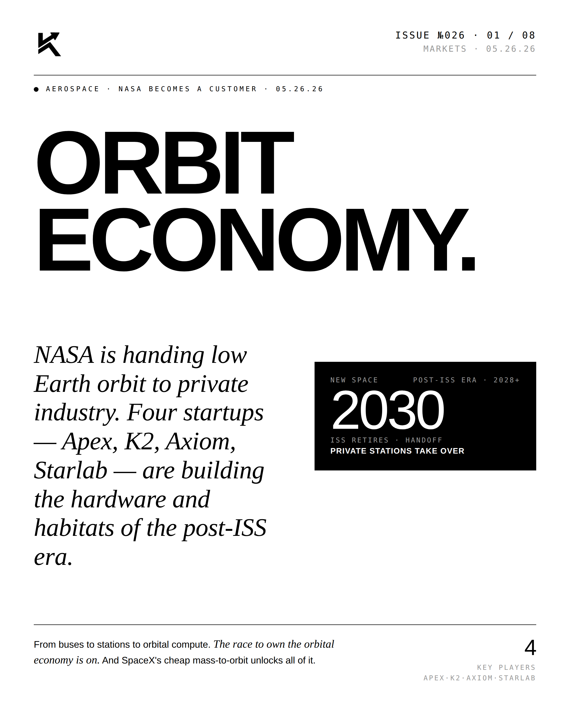
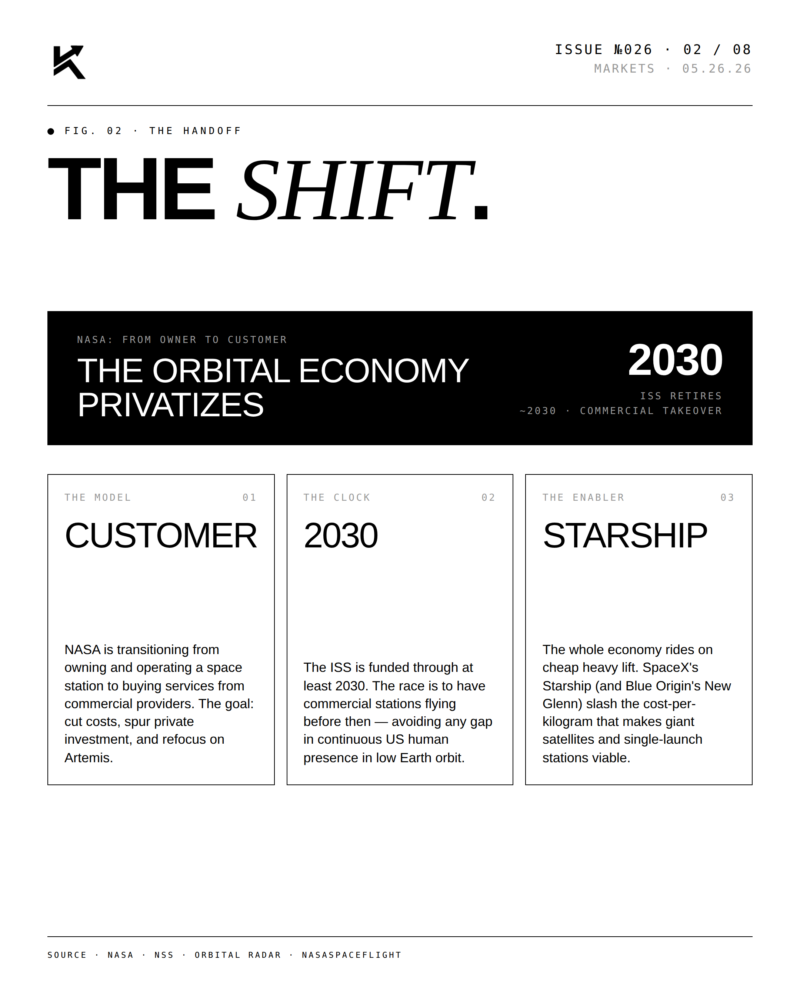
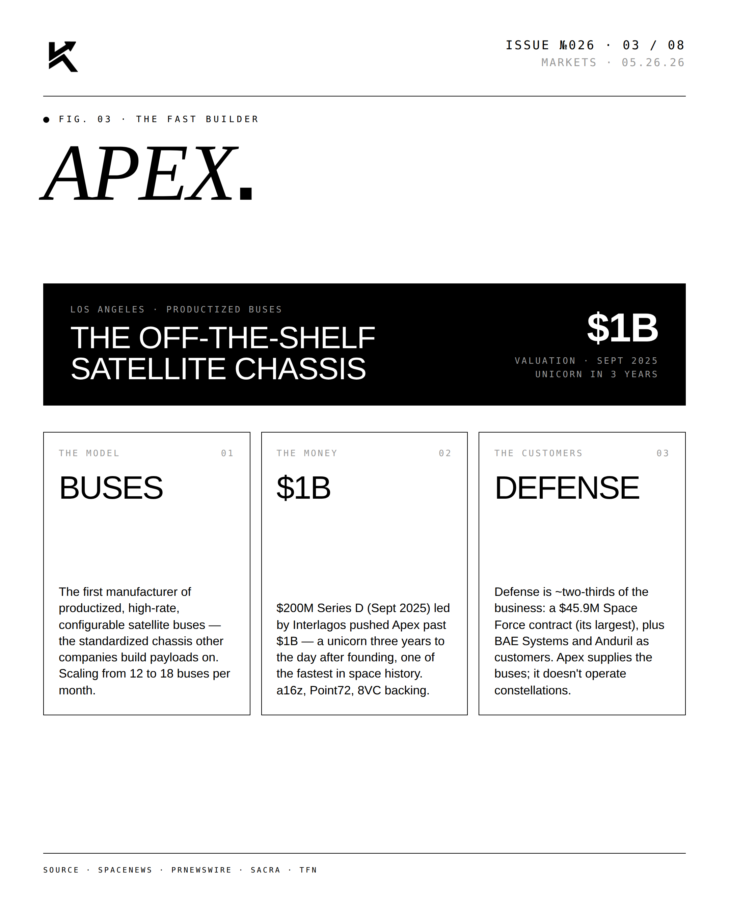
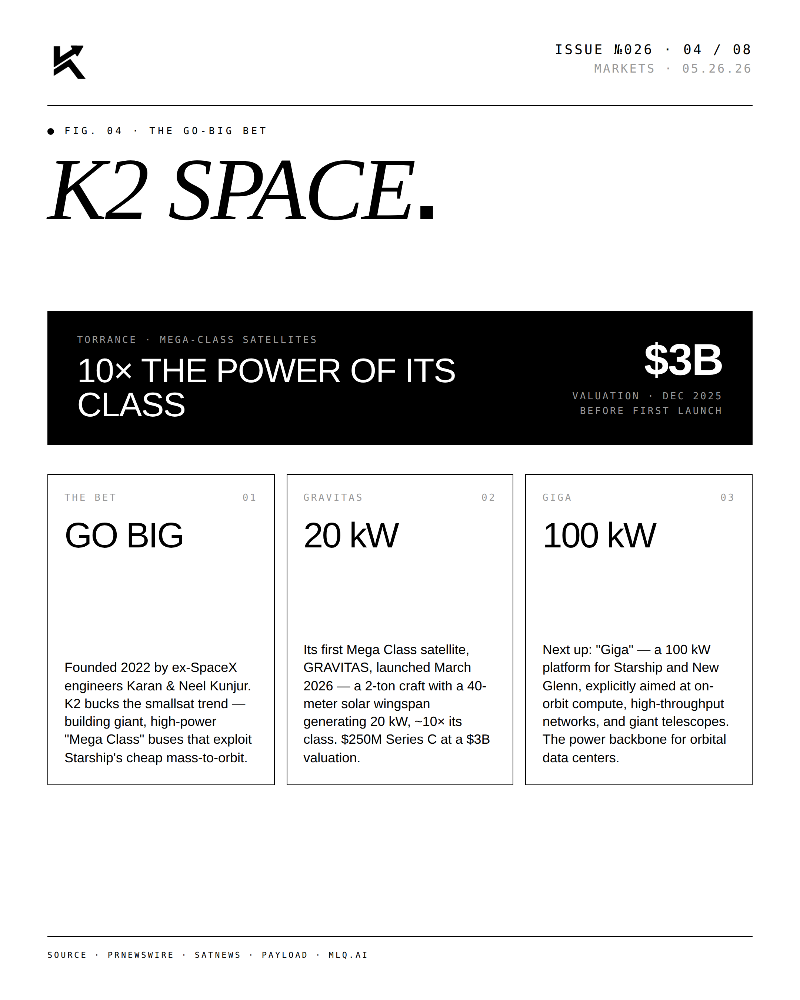
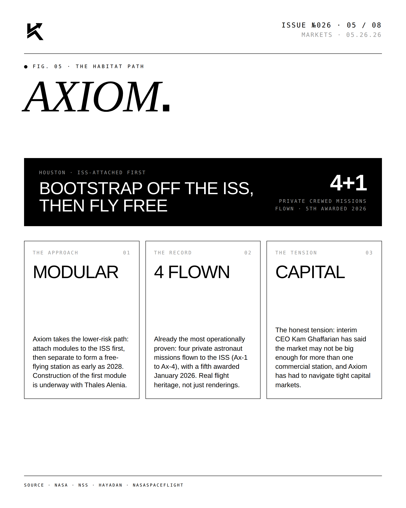
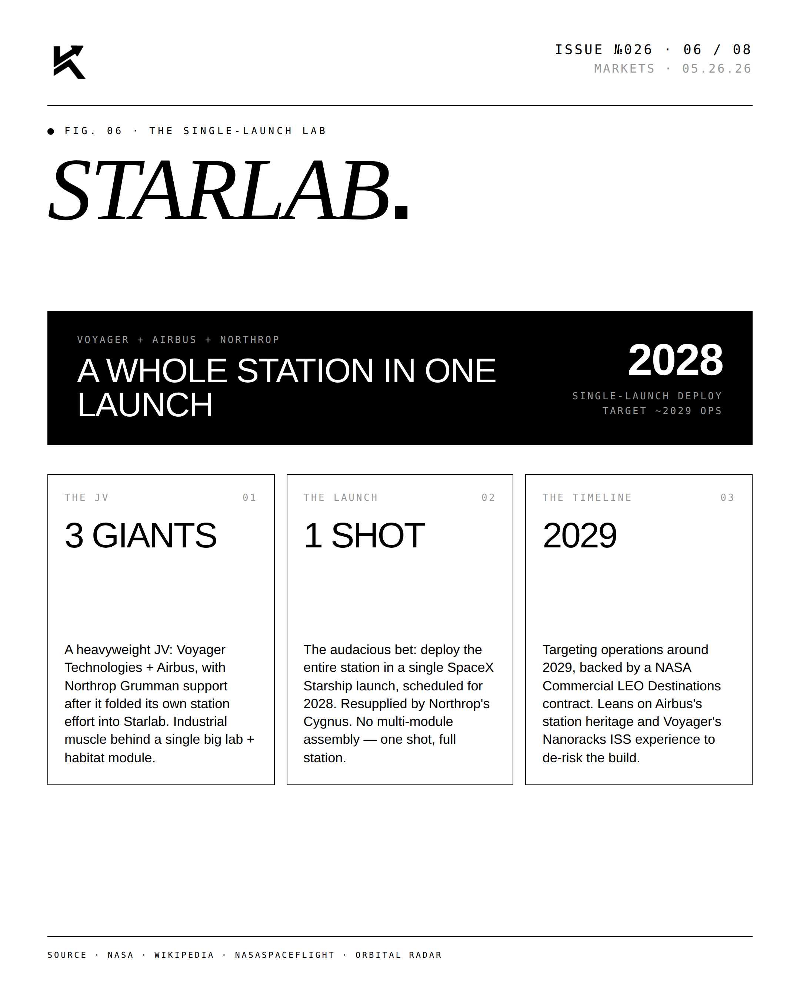
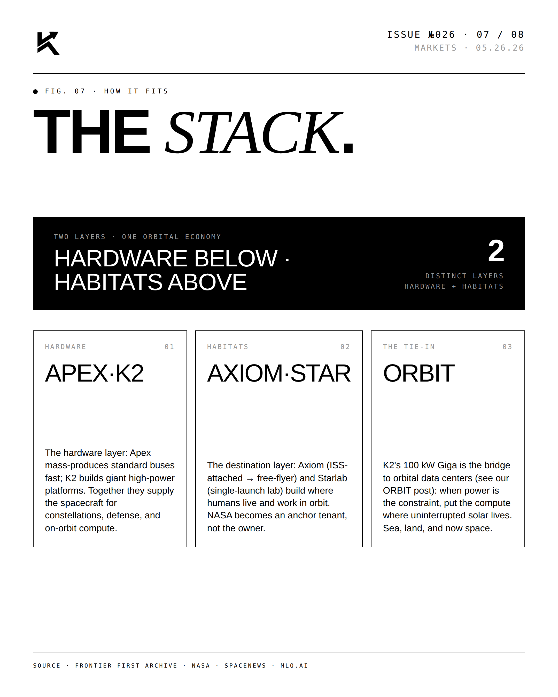
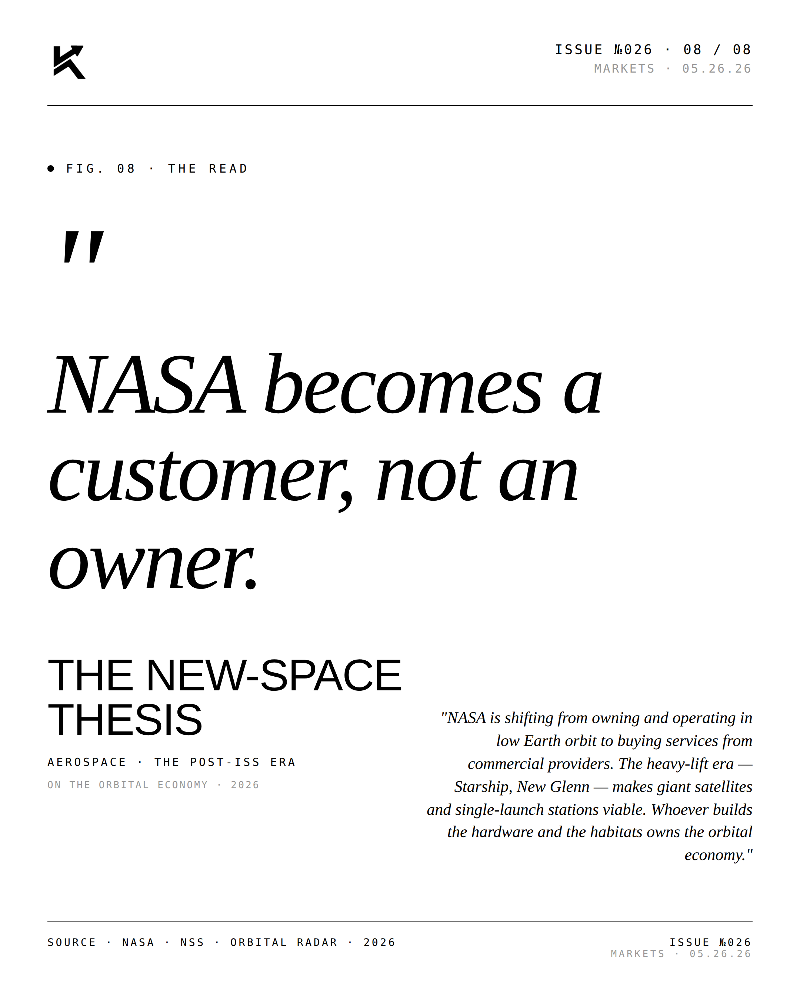

MARKETS · THE POST-ISS ERA · 05.26.26
Orbit Economy.
NASA is handing low Earth orbit to private industry. Four startups — Apex, K2, Axiom, Starlab — are building the hardware and habitats of the post-ISS era.

The Lead.
The orbital economy is privatizing on a schedule. With the ISS slated to retire by 2030, NASA shifts from owner to anchor customer — and a handful of private operators step in to build the next layer.






"NASA becomes a customer,
not an owner."THE NEW-SPACE THESISAEROSPACE · THE POST-ISS ERA · Editorial thesis · 05.26.26
